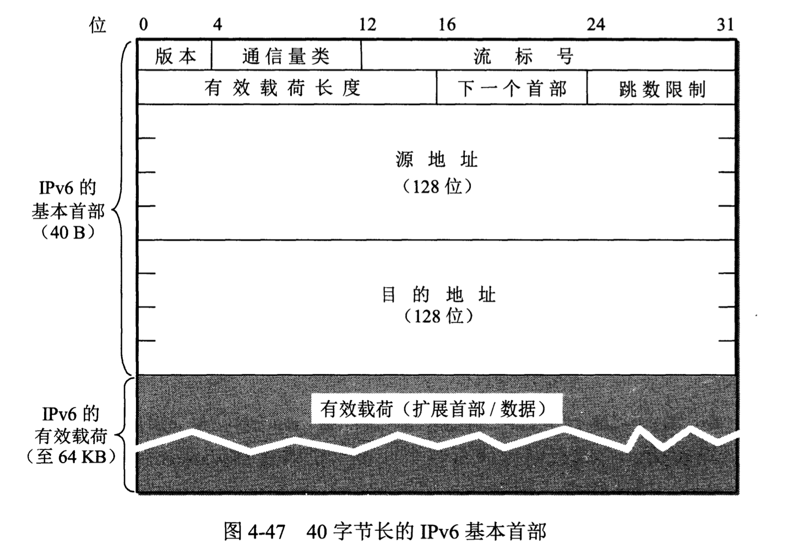

IPv6
IPv6地址
在IPv6中，每个地址占128位，地址空间大于\(3.4\times10^{38}\)。
冒号十六进制记法：
它把每个16位的值用十六进制表示，各值之间用冒号分隔，允许把数字前面的0省略。例如：
68E6:8C64:FFFF:FFFF:0:1180:960A:FFFF
零压缩：
一连串连续的零可以用一对冒号取代。在任一地址中只能使用一次零压缩。例如
FF05:0:0:0:0:0:0:B3
可压缩为
FF05::B3
IPv6的地址分类
| 地址类型 | 二进制前缀 |
|---|---|
| 未指明地址 | 00...0(128位)，可记为::/128。 |
| 环回地址 | 00...1(128位)，可记为::1/128 |
| 多播地址 | 11111111(8位)，可记为FF00::/8 |
| 本地链路单播地址 | 1111111010(10位)，可记为FE80::/10 |
| 全球单播地址 | （除上述四种外，所有其他的二进制前缀） |
IPv6数据报
IPv6数据报由两大部分组成，即基本首部(base header)和有效载荷(payload)。
基本首部
与IPv4相比，IPv6对首部中的字段进行了如下更改：
- 取消了首部长度字段，因为它的首部长度是固定的(40字节)。
- 取消了服务类型字段，因为优先级和流标号字段实现了服务类型字段的功能。
- 取消了总长度字段，改用有效载荷长度字段。
- 取消了标识、标志和片偏移字段，因为这些功能已包含在分片扩展首部中。
- 把TTL字段改称为跳数限制字段，作用是一样的。
- 取消了协议字段，改用下一个首部字段。
- 取消了检验和字段。
- 取消了选项字段，而用扩展首部来实现选项功能。

各字段的作用如下:
1. 版本(version) 占4位。指明协议的版本，对IPv6该字段是6。
2. 通信量类(traffic class) 占8位。这是为了区分不同数据报的类别或优先级。
3. 流标号(flow label) 占20位。IPv6的一个新的机制是支持资源预分配，并且允许路由器把每一个数据报与一个给定的资源分配相联系。IPv6提出流(flow)的抽象概念，“流”就是互联网上从特定源点到特定终点(单播或多播)的一系列数据报，而在这个“流”所经过的路径上的路由器都保证指明的服务质量。所有属于同一个流的数据报都具有同样的流标号。因此，流标号对实时音频/视频数据的传送特别有用。关于流标号可参考RFC 6437。
4. 有效载荷长度(payload length) 占16位。它指明IPv6数据报除基本首部以外的字节数。最大值是64KB。
5. 下一个首部(next header) 占8位。它相当于IPv4的协议字段或可选字段
- 当数据报没有拓展首部时，下一个首部字段的作用和IPv4的协议字段一样。
- 列表项当出现拓展首部时，下一首部字段的值就标识后面第一个拓展首部的类型。
6. 跳数限制(hop limit) 占8位。用来防止数据报在网络中无限期地存在。
7. 源地址 占128位。是数据报的发送端的IP地址。
8. 目的地址 占128位。是接收端的IP地址。
拓展首部
IPv6把原来IPv4首部中选项的功能都放在拓展首部中，并把拓展首部留给路径两端的源点和终点的主机来处理，而数据报途中的经过的路由器都不处理这些首部（只有一个首部例外，即逐跳选项拓展首部），这样大大提高了路由器的处理效率。
在RFC 2460中定义了以下六种拓展首部：
(1) 逐跳选项
(2) 路由选项
(3) 分片
(4) 鉴别
(5) 封装安全有效载荷
(6) 目的站选项
每一个拓展首部长度可以不同，但第一个字段都是8位的“下一首部”字段。此字段的值指出了在该拓展首部后面的字段是什么。当使用多个拓展首部时，应按以上的先后顺序出现。高层首部总是放在最后面。
从IPv4向IPv6过渡
- 双协议栈。使一部分主机（或路由器）装有双协议栈：一个IPv4和一个IPv6。这表明它同时具有两种IP地址：一个IPv6地址和一个IPv4地址。
- 隧道技术。这种方法的要点是在IPv6数据报要进入IPv4网络时，把IPv6数据报封装为IPv4数据报。
ICMPv6
ICMPv6合并了地址解析协议ARP和网际组管理协议IGMP。
ICMPv6是面向报文的协议，它利用报文来报告差错，获取信息，探测邻站和管理多播通信。
ICMPv6报文：
- 差错报文
- 信息报文
- 邻站发现报文（ND协议）
- 组成员关系报文（MLD协议）
参考文献：《计算机网络（第7版）》谢希仁著。